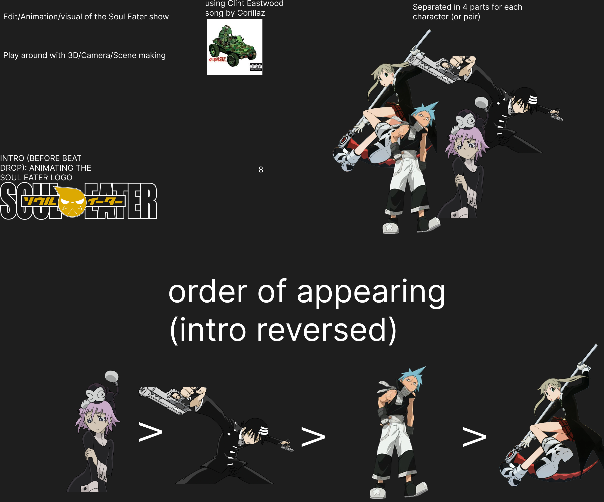

I decided to make an animation edit on an anime called Soul Eater, with the song Clint Eastwood by
Gorillaz. Due to the lack of time, I was able to only do the intro. I used lots of layers and the puppet
tool to animate. I played a lot with light and used blur effects.
I've known how to animate before with the puppet tool, so this was an opportunity to practice it.
Ideally it should be longer so maybe in the future I will extend it.